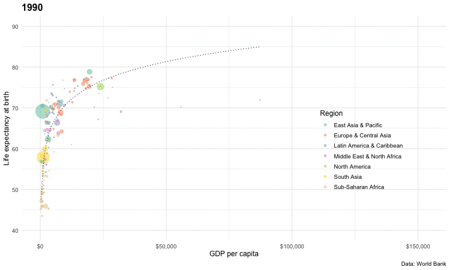

Data Overview
The raw data showcases various key economic indicators for different countries from 1990 to 2017. I have chosen the Gross Domestic Product (GDP), life expectancy at birth and population as a crucial data point to visualize the economic development of countries over the past 30 years. For this purpose, I primarily utilized the gganimate package in R to create animated GIFs.
The dataset includes the following fields:

Visualization Process
`transition_time` function animates the data by `year`, showing only the data that is relevant for any one point in time. As well as generating a frame for each year, it also generates intermediate frames to give a smooth animation.
Then Animating data over time, with a progressive reveal of data to create a cumulative animation.
This visualization was developed under the guidance of Professor Peter Aldhous.